Proyecto 02 · Kawasaki · Integración OEMProject 02 · Kawasaki · OEM integration
Cubrecárter KLX 300 / 300RKLX 300 / 300R skid plate
Cubrecárter de aluminio diseñado para la Kawasaki KLX 300 / 300R e integrado a la línea de ensamblaje OEM. Pensado desde el primer boceto para fabricarse por estampado y plegado, hoy se produce en serie.
Aluminum skid plate designed for the Kawasaki KLX 300 / 300R and integrated into the OEM assembly line. Designed from the first sketch for stamping and bending, and now in series production.
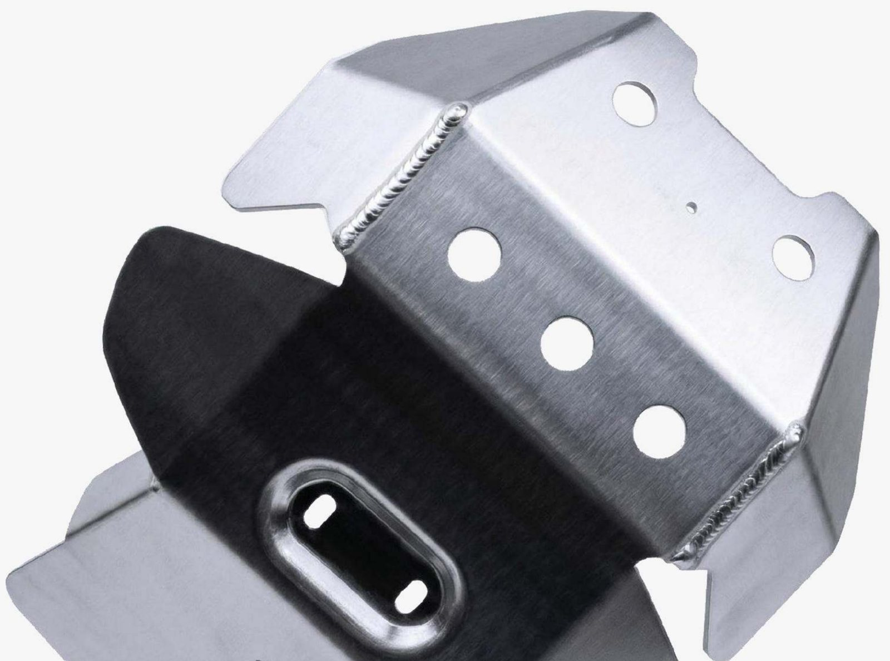
Relevamiento en plantaOn-site research
El proyecto arrancó en la planta de ensamblaje, trabajando directamente sobre las primeras unidades de producción. Ahí se definieron los puntos de fijación, el espacio disponible y las zonas del motor que había que proteger.
The project began at the assembly plant, working directly with early production units. That's where the mounting points, available space and engine areas requiring protection were defined.
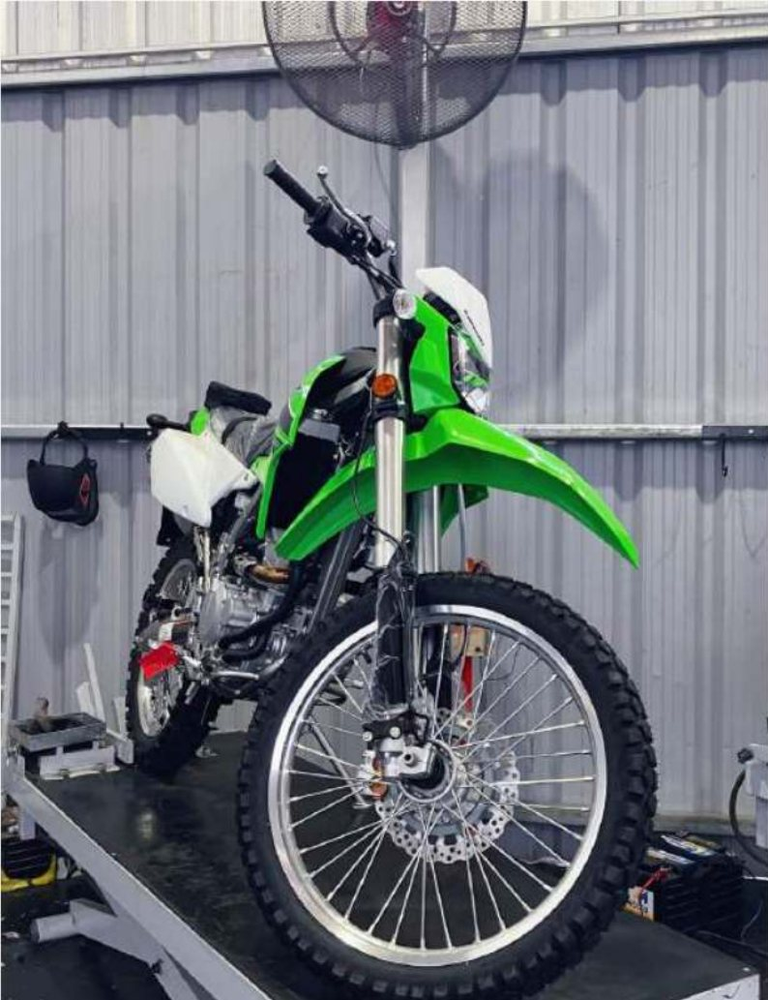
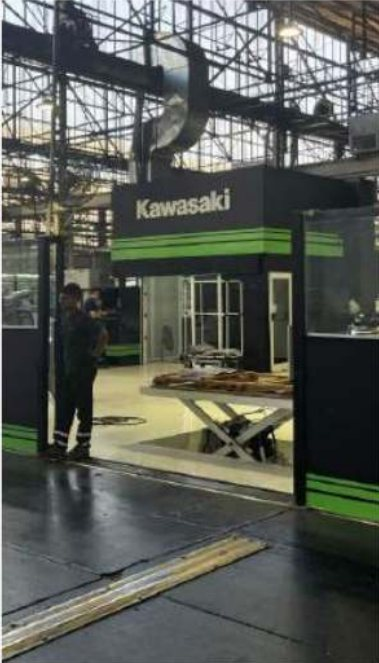
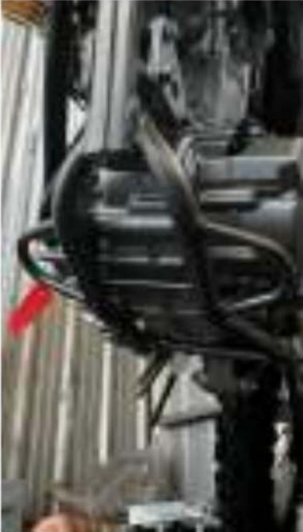
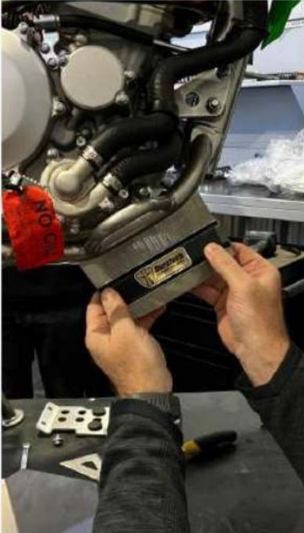
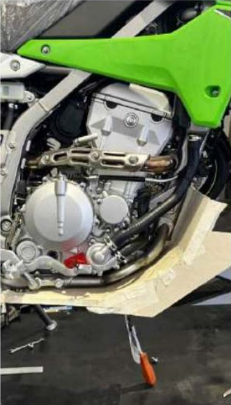
Desarrollo de diseñoDesign development
El desarrollo equilibró tres frentes: rendimiento estructural, integración con los componentes originales y factibilidad dentro de las restricciones de estampado y plegado.
Development balanced three fronts: structural performance, integration with the original components, and manufacturability within stamping and bending constraints.
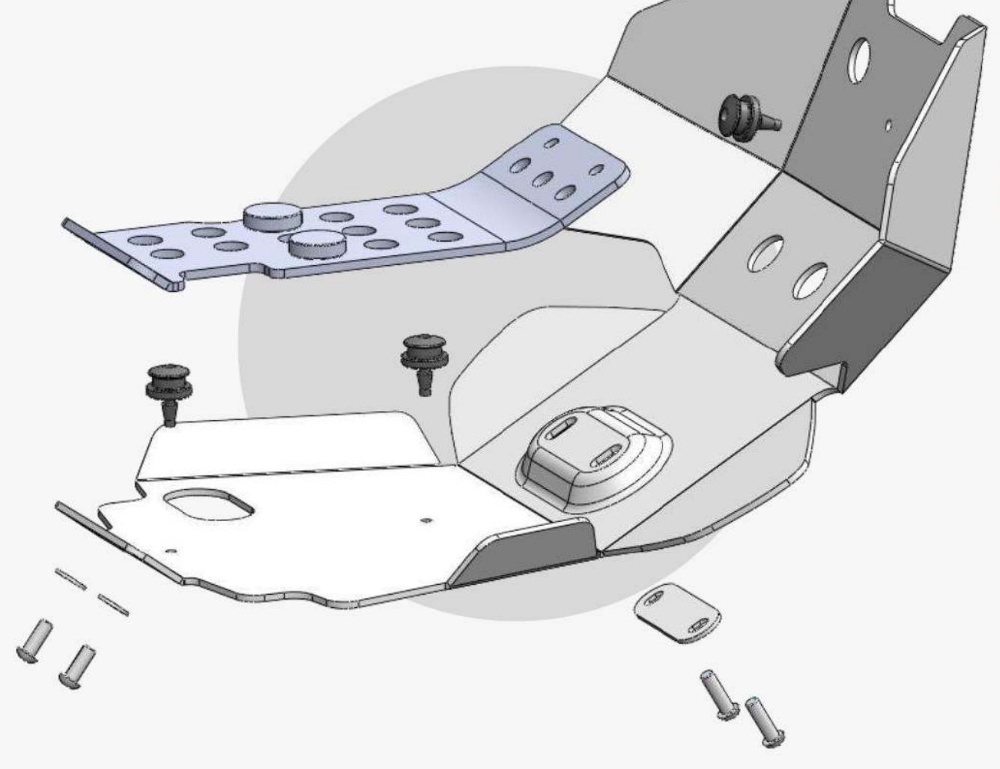
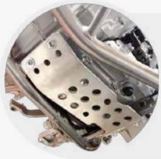
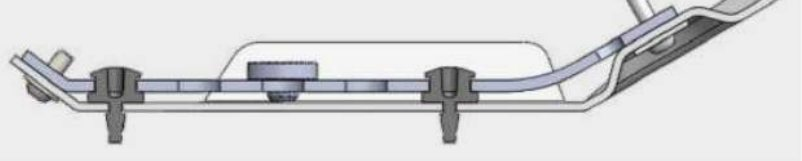
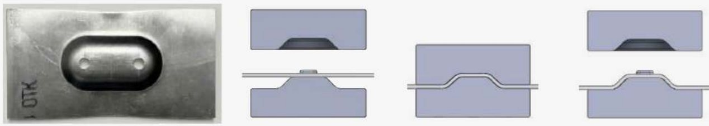
Producción y validaciónProduction & validation
Las primeras pruebas de estampado y plegado confirmaron la factibilidad del conformado y el comportamiento del material. Con eso validado, la pieza pasó a producción en serie.
Early stamping and bending tests confirmed forming feasibility and material behavior. Once validated, the part moved into series production.
fabricadas dentro del programa de accesorios OEM.
manufactured within the OEM accessory program.
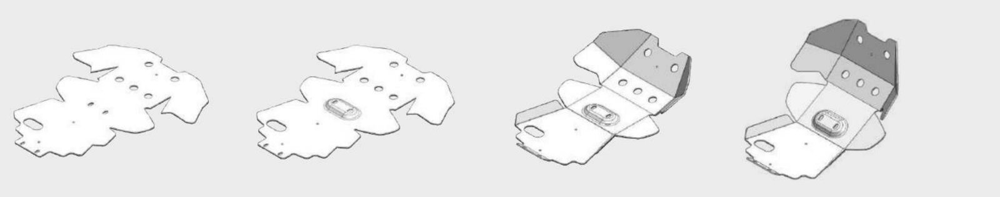
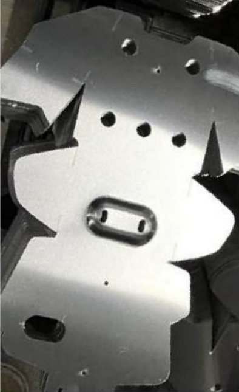
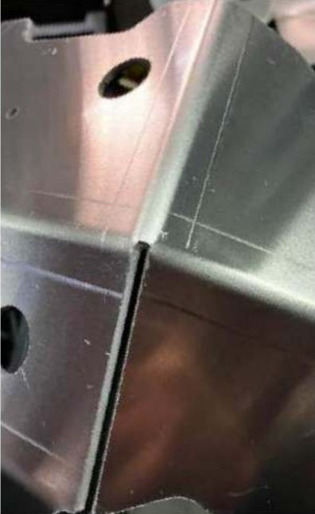
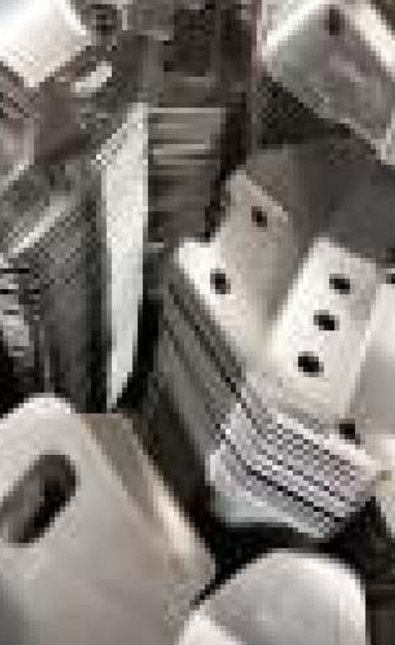
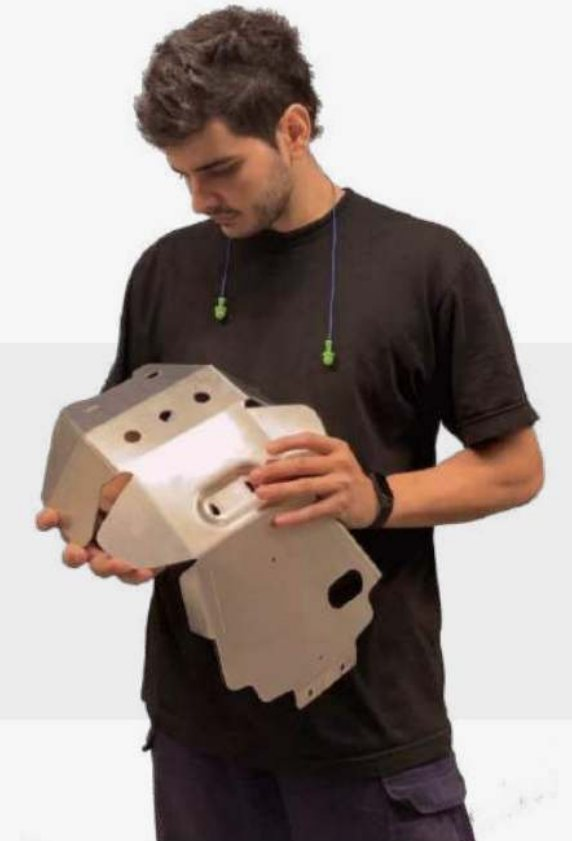
Uso realReal-world use
El producto final se integra de forma natural a la moto y protege los componentes críticos del motor en condiciones reales de manejo.
The final product integrates seamlessly with the motorcycle, protecting critical engine components under real-world riding conditions.
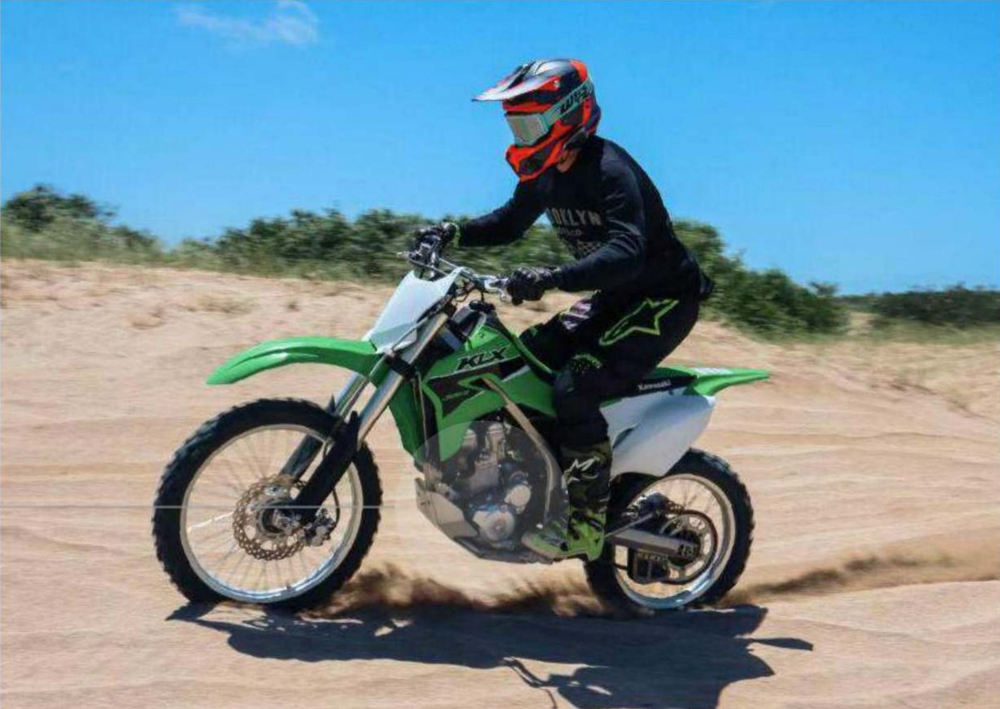
Un diseño, dos modelosOne design, two models
La misma pieza sirve para la KLX 300 y la KLX 300R, con el mismo calce y el mismo rendimiento estructural en ambas plataformas.
The same part fits both the KLX 300 and KLX 300R, with consistent fitment and structural performance across both platforms.